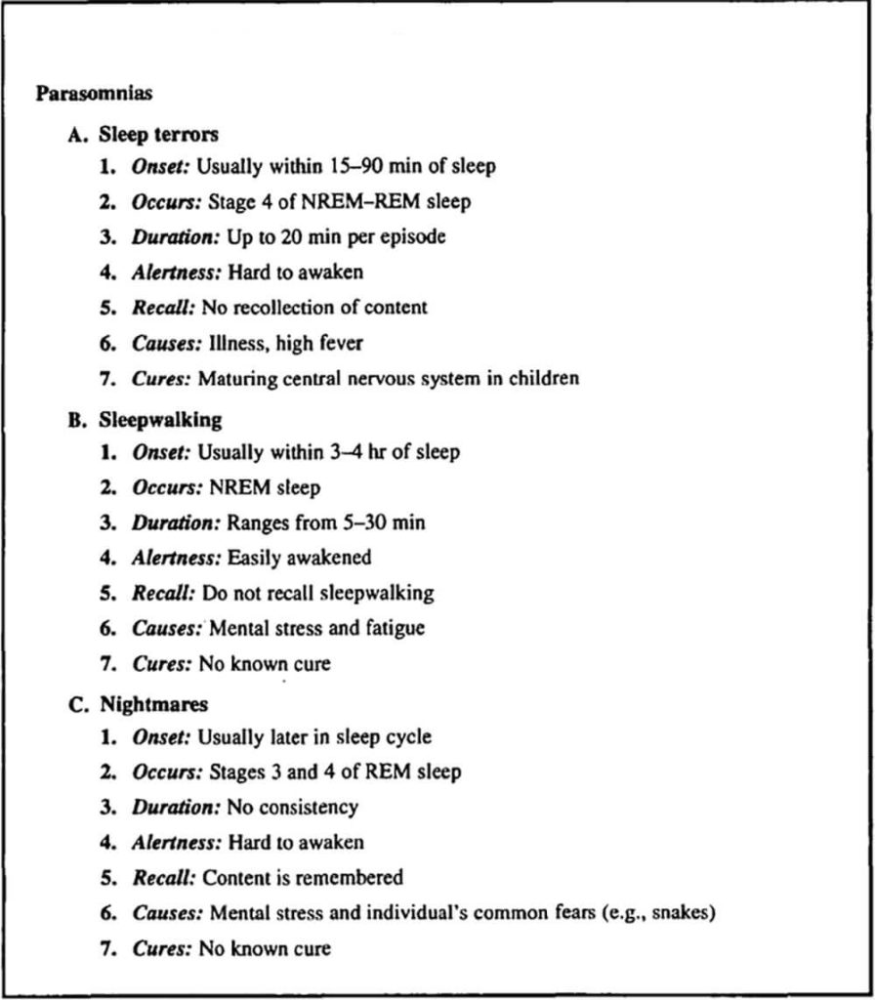

This method uses indentation and numeric values to store information of precedence. Although this method is seen to be difficult, it is one of the most efficient methods because the notes made are very organized.
By the way these notes are organized, it makes it very easy to review the content you have learned. Although, this method is difficult to use during a live lecture. On the right side of the screen, is an image displaying how this method can be used.